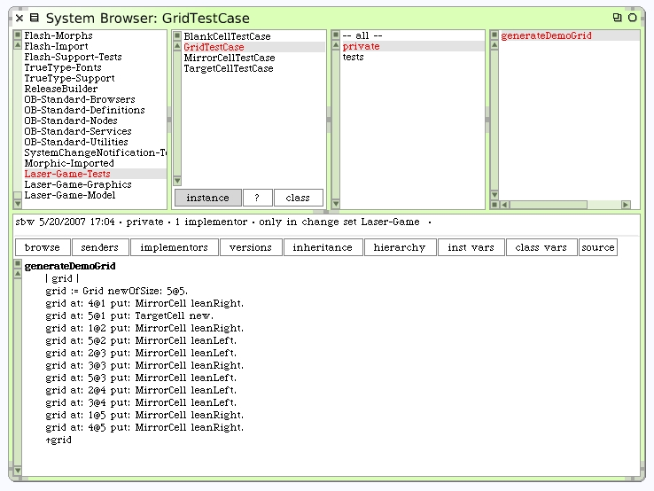

Making a Deeper Grid Unit Test
With the basics on the cells working, and a minimal test for Grid, we can start to write a much deeper unit test for the Grid class, using broader parts of the overall design. Remember the original diagram used to introduce the game idea? Let's use that for our unit test. Here's the empty diagram and the diagram with the laser firing.

|

|
We will need a 5x5 grid. The blank tiles will already be in the grid when it's instantiated, so we only need to place the Target Cell and Mirror Cells. To make the test case easier to read, I'll write an instance method to generate the ready-to-use Grid. Note that this new method is on the "private" protocol.
While writing the generator method I found myself getting confused about which part of the x@y notation to use for rows and columns. That's a tip-off that we should rewrite some of our methods to make this task easier. Maybe we should have written this test before we even wrote the #at: and #at:put: methods on Grid?
We'll have to remember to go back and fix these names to be more intention revealing.